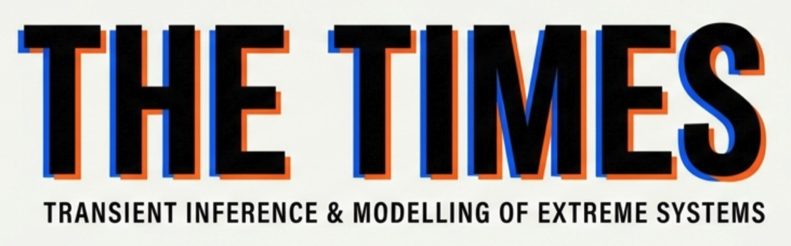

Institute of Astronomy · Cambridge
Extreme systems, every Wednesday
A weekly meeting for anyone working on gravitational waves, electromagnetic transients and the inference that connects them to astrophysics. Talks, journal clubs, round tables and tutorials.
What is TIMES for?
01Visitors
A platform for visits and talks. If you have a visitor who wants to speak and fits the scope, reach out to us.
02Presentations
A place for internal talks and progress updates.
03Recent news
Relevant papers, conferences, data releases and announcements.
04Journal club
Detailed discussion of specific papers.
05Tutorials
Modelling, inference, agentic AI, data and observations.
06Community
One place for GW and EM transient people across the department to meet.
- Have you heard of Modular-Jim?
- Have you heard of Redback-JAX?
- Have you heard of SNAX?
- Have you heard of Numbat?
- Have you ever used Claude Code?
Who is it for?
Students and staff interested in GW and EM transient astrophysics and inference. It's open to anyone.
TIMES is separate from existing group meetings. It isn't about inference in general, cosmology, galaxies or CMB/LSS. Many of us go to those meetings too.
Recent papers
All papers →Got a speaker?
If someone visiting fits the scope, or you want to give a talk, lead a journal club or run a tutorial, get in touch.
Contact the organisers